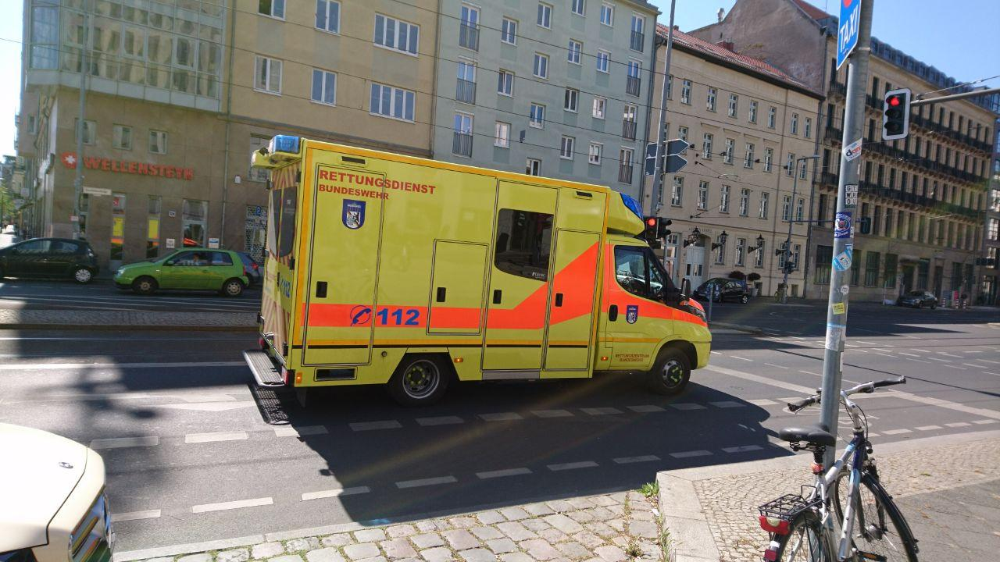
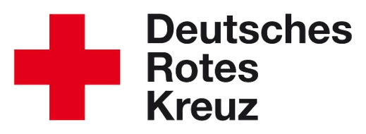
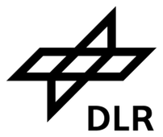
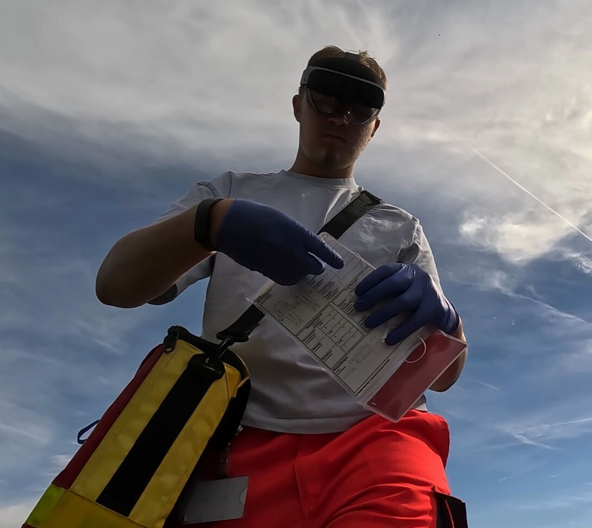
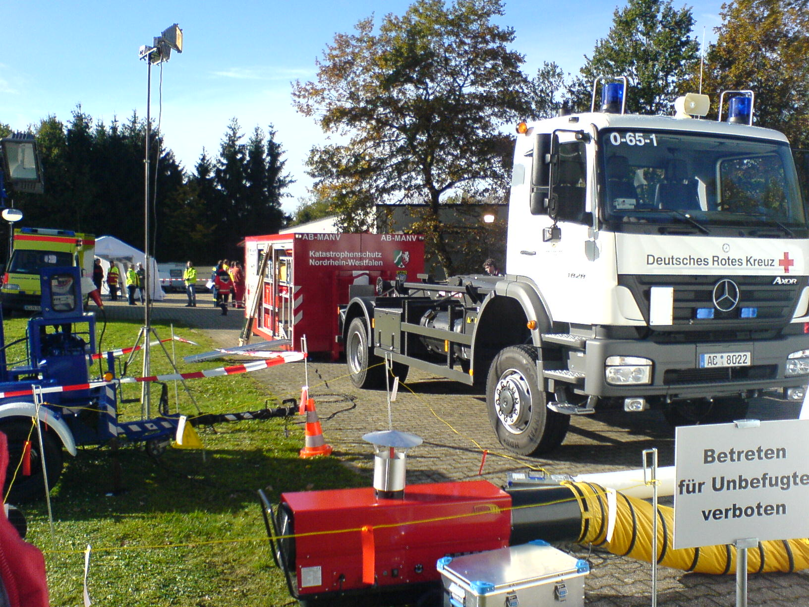
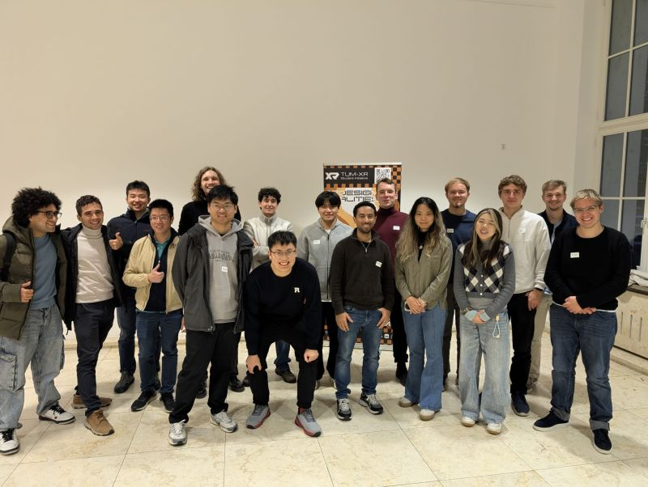

Medizin hat ihre eigene Sprache.
Fachbegriffe, Abkürzungen, neue Wörter: Wir entwickeln das Modell mit dem Ziel hoher Zero-Shot-Genauigkeit, ohne Training vor Ort.

J.A.R. Medical · Medizinische Spracherkennung
Wer Menschen versorgt, hat schon genug zu tun.
Wir entwickeln Spracherkennung, die medizinische Dokumentation dort beginnen lässt, wo sie entsteht: am Patienten.
Interaktive Simulation · Direkt im Browser
Sprechen. Festhalten. Weiterhelfen.
Berlin, April 2020 · Koffeeinist / CC BY-SA 4.0Gemeinsam weiter
Unterstützung aus
Praxis und Forschung.

Pilotprojekte & fachlicher Austausch
Technik, Geräte & Forschung

Bildgebung, Daten & Integration
01 / Die Idee wird greifbar
Eine Beobachtung, eine Maßnahme, eine Übergabe. Im Einsatz wird vieles ausgesprochen. Und später noch einmal aufgeschrieben.
Genau hier setzen wir an: Unser Schwerpunkt ist die medizinische Transkription. Gesprochene Informationen sollen direkt zu nutzbarer Dokumentation werden. Unser AR-Prototyp zeigt, wie sie dabei im Blickfeld bleiben können.

Unser Prototyp im Test02 / Das Herzstück: Transkription
Wir arbeiten an Spracherkennung für medizinische Fachsprache: in Echtzeit, lokal und auch ohne Internet. Aus dem Transkript können strukturierte Einträge entstehen.
So könnte ein Eintrag entstehen
Beispiel„Patient A7 ist ansprechbar. Übergabe um vierzehn Uhr sieben.“
Illustratives Beispiel. Keine Live-Aufnahme, keine Patientendaten.
Fachbegriffe, Abkürzungen, neue Wörter: Wir entwickeln das Modell mit dem Ziel hoher Zero-Shot-Genauigkeit, ohne Training vor Ort.
Lokale Verarbeitung ist Teil unseres Ansatzes. Die Versorgung findet schließlich auch dort statt, wo das Netz nicht mitkommt.
Kennung, Beobachtung und Zeit werden als Felder nutzbar. Die fachliche Prüfung bleibt beim Menschen.

Forestsettler / CC BY-SA 3.003 / Vom einzelnen Wort zum Überblick
Unsere Geschichte beginnt im Katastrophenschutz. Dort wird besonders deutlich, was passiert, wenn Informationen auf Papier bleiben oder mehrfach weitergegeben werden müssen.
TriARge verbindet die Sprachdokumentation mit Patientenzuordnung, einer AR-Ansicht und dem gemeinsamen Lagebild der Einsatzleitung. Die lokale Architektur hält die Simulation auch ohne Cloud am Laufen.
Beobachtungen und Maßnahmen festhalten.
Eintrag und erkannte Patientenkennung verbinden.
Informationen über die AR-Ansicht abrufen.
Updates im Dashboard der Einsatzleitung sehen.
Entwicklungsprototyp für Übungen und Simulationen. Kein zertifiziertes Medizinprodukt.
Ablauf live erleben04 / Die Menschen dahinter
Johannes Nirschl, Alexander Kluge und Jonas Kaindl haben J.A.R. am Gymnasium Neubiberg begonnen. Wir entwickeln Modell, Hardware und Software selbst und lernen im Austausch mit Praxis und Forschung dazu.
Mit uns ins Gespräch kommen
Ihr nächster Schritt
Von der Versorgung zuhause bis zum großen Einsatz: Entdecken Sie, was wir für Ihren Bereich entwickeln.
Unser Ansatz für die Pflege und die Dokumentation im Alltag.
02 / KrankenhausGesprochene Informationen dort erfassen, wo Versorgung stattfindet.
03 / RettungsdienstDokumentation vom ersten Kontakt bis zur Ankunft in der Klinik.
04 / KatastrophenschutzSprachprotokoll, AR und Lagebild im Zusammenspiel kennenlernen.
Die nächste gute Idee beginnt mit einem Gespräch.
Zum Projekt beitragen